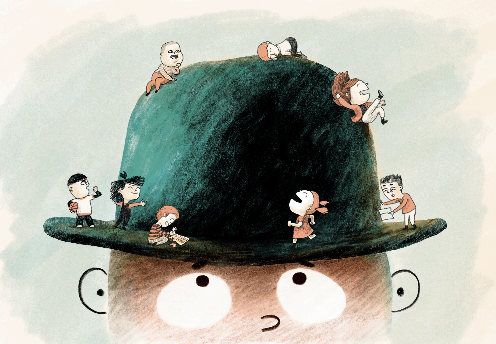

Becoming invisible
Lukas began with a drawing by Lucio Notarnicola: a transparent boy sitting on a bench, wearing a bowler hat. I wondered why he was hiding behind a newspaper. That question became the story.

Bilingual picture book
As Invisible as Lukas
You know those days when everything goes brilliantly and you feel wonderful, clever and strong? Well, I never have days like that.English rendering of the Italian excerpt on this website; not a quotation from a published English edition.
Lukas is very good at disappearing. Not in a magical way - or perhaps a little: he knows how to go unnoticed, stay on the sidelines and avoid being seen too much. But when his invisibility suddenly becomes something everyone notices, Lukas finds himself in the spotlight and has to work out what it really means to be seen.
Buy from Knygos.lt. External links open in a new tab.
Lukas, nematomas berniukas is about the moments when we feel invisible. But it also explores the opposite: what happens when, all of a sudden, everyone begins to notice you?
Lukas wants to hide, yet his talent for going unnoticed is exactly what makes everyone notice him. This begins a small adventure about finding your place without disappearing or having to become something else.
It is a story about feeling invisible, friendship and the wish to belong to a group, even when it is hard to let others see you as you are.
Lukas began with a drawing by Lucio Notarnicola: a transparent boy sitting on a bench, wearing a bowler hat. I wondered why he was hiding behind a newspaper. That question became the story.

Published by a Lithuanian publisher, the book brings together Lithuanian and English, reaching readers across borders through a universal theme.

When I wrote the story, its title was Invisibile come Rolando. Before finding his final name, Lukas was called Rolando.
Lukas, nematomas berniukas / As Invisible as Lukas was included in the 25-title longlist for the best translated children's and young adult books published in Lithuania in 2025. The list was compiled by a panel of experts from the Lithuanian Association of Literary Translators.
Official longlistIn a specialist review of translated children’s books, Akvilina Cicėnaitė discusses Lukas and the sensitive theme of feeling unseen.
ReadEglė Baliutavičiūtė includes Lukas among 13 recommended picture books, highlighting friendship and the way an apparent weakness can become a strength.
ReadA musical presentation of Lukas was announced for the Vilnius children’s book festival.
ReadSecond-grade pupils read Lukas in Lithuanian and English and took part in an activity about friendship and making others feel seen.
Read